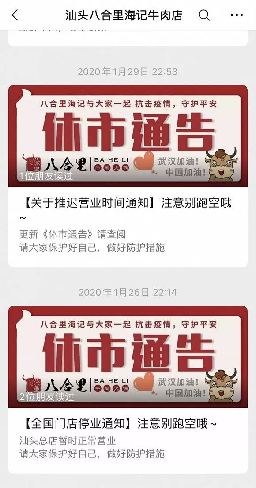

特别报道 | 因疫情停摆的餐饮业，仅靠外卖能自救吗？
原文链接 备份链接 “谁能想到疫情爆发在春节期间，我们该备的货已经备齐，给员工的年终奖也已经发完，公司的现金流不多了。” 记者 | 刘娉婷 实习记者 | 陶紫东 编辑 | 王姗姗 按马纪原先的设想，2020年的龙虾季“是要打一场翻身仗 …
 来源：八合里微博
来源：八合里微博
记者 | 卢奕贝 编辑 |牙韩翔
“
受到新型冠状病毒肺炎疫情的影响，通常需要排队2-3个小时的网红火锅店，如今也到了捉襟见肘的地步。
”
1月25日，大年初一，汕头八合里海记牛肉火锅（下称“八合里”）的营业额是平时的十分之一。没有客人，八合里的老板林海平才发觉疫情对生意的影响超过了自己的预期，并且防控局势变得严峻，于是自初二开始，八合里陆续停掉了所有门店。
春节本是牛肉火锅行业的旺季。随着大城市人群回流，八合里海记在二三线城市的门店都会迎来爆发期。而在一线城市，林海平明显感觉到，近两三年来在北上广深的春节生意也越来越好做。在日常，要吃到一顿八合里的牛肉火锅，通常要排队2-3个小时。
但如今，受到新型冠状病毒肺炎疫情的影响，他形容，“现在是一把清零。”

八合里公众号截图。
“说真的，我也没想到会这么惨。本来觉得，应该是停个半个月吧，十天半个月应该就能复工吧？谁知道越来越严重了”。林海平对界面新闻说。
林海平的八合里，曾引领了那场席卷全国的牛肉火锅热。
出身潮州农民家庭，林海平学历不高，以前只是亲戚家潮汕牛肉丸店里的一名切肉师傅。随后和他哥哥在汕头八合里附近租了一个23平方米的档口，开了一家名为“海记”的牛肉店。这家店就是八合里海记的雏形。
2015年前后，牛肉火锅成为全国餐饮的热门品类。据《商界》杂志报道，当时有近400亿元资金在一年内投入了这个市场。到2016年，全国范围内有一万家以上的潮汕牛肉火锅。
八合里海记也顺势崛起，门店由最初的23平方米扩展至1000余平方米，开遍了广州、北京、武汉等国内的13个城市，拥有132家门店。
但今年自全面停业开始的第一个月，八合里的损失已经高达约6000万元。这132家门店，平均一家门店的铺租就要30万，这包括店租、人工、还有宿舍成本。这部分的硬性支出就总共需要4000万。
此外，人工是一个大问题。八合里目前雇佣的员工有约5000人，早先已经休假的员工，暂时还在家中待命。取消堂食的门店、春节期间自愿上岗的员工，目前都在协助外卖运营。在营收锐减的情况下，八合里选择了分批发放员工工资，先发一部分，剩下的等情况稳定后补发。
“但员工应得的一分钱都不会少，哪怕是卖房子来发工资。”林海平说。
而其余的管理公司、供应链、中央厨房、屠宰厂、物流车队还有养殖场，都是配套于门店的服务。门店一停，这些全部都停。
“第一个月确实是有约6000万的亏损，第二个月稍微可以控制一下。现金流，确实只能顶两个月。其实我不是吹的，很多餐饮的现金流，都顶不了两个月不开业。”林海平说。
事实上，全国的餐饮行业都如此被动。
老乡鸡关闭了武汉地区100多家门店，保守估计损失了5亿元；外婆家负责人也表示，每天天亮醒来，就要支付250万元工资，目前看只能苦撑2个月；拥有400多家西贝莜面村餐厅的西贝餐饮，预计春节前后一个月损失营收7亿元至8亿元，2万多名员工一个月支出在1.5亿元左右。
根据中烹协调研数据，相比去年春节，疫情期间，78%的餐饮企业营收损失达100%以上；9%的企业营收损失达到九成以上。而恒大研究院的数据显示，仅在春节七天内，疫情已对餐饮行业零售额造成5000亿元左右的损失。
和许多餐饮店一样，八合里的第一个自救措施寄望于外卖。6天前，八合里的即食牛肉丸、牛腩、牛肉火锅家庭套餐纷纷上架，由刚刚恢复营业的部门门店配货，外卖平台负责无接触配送。

八合里公众号截图。
“不过只有20多家门店有开通外卖，而营业额只达到原本这些门店的30%，如何弥补？杯水车薪啊。”目前，八合里还有100多家门店仍在停业。
开通外卖业务，很大程度上也不是要靠此来弥补全部损失。林海平打算用这个机会来测试整个团队运营的能力，等疫情过后可以更好的无缝衔接，去直接开业。然而这一切的前提，是八合里在第三个月能恢复营业。
林海平也看到了一些政策性的措施，来解决当下之急。譬如中国人民银行等五部门已下发《关于进一步强化金融支持防控新型冠状病毒感染肺炎疫情的通知》，要求对受疫情影响较大的批发零售、住宿餐饮、物流运输、文化旅游等行业，特别是小微企业，不得盲目抽贷、断贷、压贷。
但八合里暂时不想考虑金融贷款的援助——他的首选是卖房。
“真的是情况比较严峻的话，你如何来还你的贷款呢？所以，卖房子可能就是比较直接的想法。”林海平说，“如果真的要卖，这段时间不一定卖的出去呢。”
这是他的最坏打算，如果到第三个月餐厅还无法恢复正常营业，林海平考虑通过出售自持物业来缓解资金压力。

八合里店里的师傅正在切肉。 来源：八合里微博
在疫情爆发以前，林海平原本想在2020年做2-3个新项目，也计划把八合里扩张30%，开多4、50家门店出来。但目前，新项目全部暂停，已经签好合同的新门店只能搁置着，而没有签好合同的项目他决定暂时止步。
自春节以来，林海平一直留在汕头老家，和所有人一样，宅在家里远程办公，也终于有时间陪陪老婆小孩。他的朋友圈背景设置的是全家人。也尽可能地保持低调，无论在外面赚了多少钱，平时都只喜欢穿着运动服和运动鞋。
“没问题的，相信国家，两个月一定没问题的，能控制下去。”林海平在最后对界面新闻说，“而且我们这一代人从菜市场切牛肉切出来的，怕什么？大不了回去切牛肉咯。有的吃有的住就行了。”
未经授权 禁止转载

原文链接 备份链接 “谁能想到疫情爆发在春节期间，我们该备的货已经备齐，给员工的年终奖也已经发完，公司的现金流不多了。” 记者 | 刘娉婷 实习记者 | 陶紫东 编辑 | 王姗姗 按马纪原先的设想，2020年的龙虾季“是要打一场翻身仗 …
原文链接 备份链接 相比其它行业，餐饮业是最早遭受疫情冲击的行业之一。这个春节，餐饮人正在遭受极大的心智和经营能力的考验 图/法新 文｜《财经》记者 杨立赟 编辑｜余乐 一个月前，应乾坤决定留在杭州过年的时候，没想过如今的自己会进退两难。 …
原文链接 备份链接 《创新经济战疫计划》，是燃财经在新型肺炎疫情期间推出的特别栏目，关注创新经济企业遇到的新难题、商讨应该采取的新对策，希望能够帮助中小企业一起战胜挑战、把握机会。 作者 | 唐亚华 编辑 | 魏佳 2月10日起，北京、上 …
原文链接 备份链接 经济观察网 记者 李紫宸 北京报道2020年的春节，和国内的其他城市一样，北京也少了往年的热闹。 疫情像是蔓延的海水，让城市变成了一座座海上的岛屿，居民的活动也因之而骤减。骑手这份特别的职业，成为了维系城市运转必不可少 …
原文链接 备份链接 以外来人员就业为主的地区应延迟复工，以本地人员就业为主的地区应视优先复工；适当延迟劳动密集型行业复工，优先放宽非劳动密集型行业复工；重点保障疫情防控必需、城市运行必需、群众生活必需的行业复工 *********** …